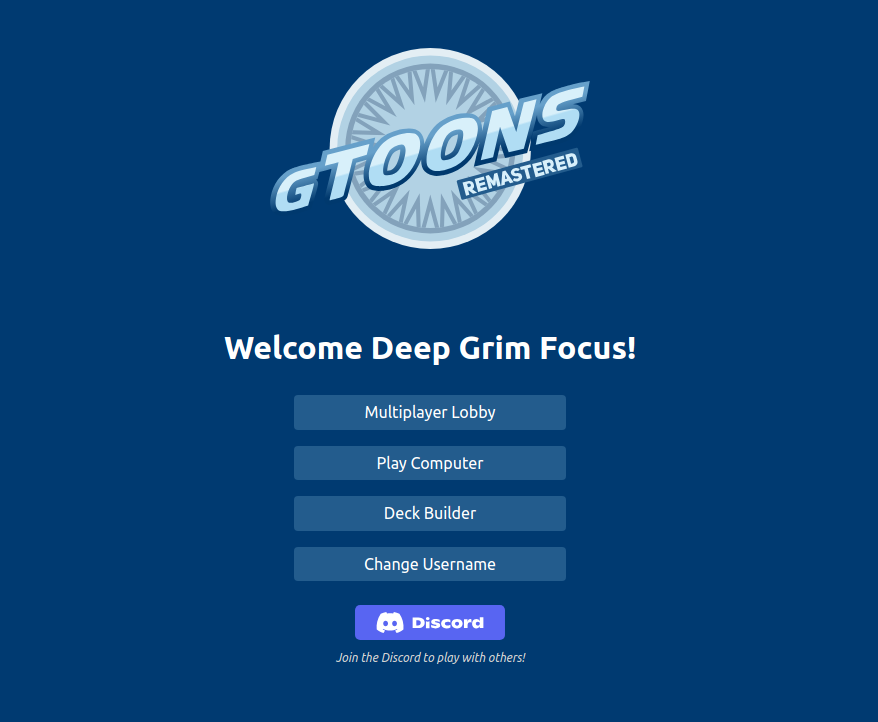

On October 14th, 2002, Cartoon Network released gToons. The game could be played on Cartoon Orbit: a Flash web app in which users could create an account and earn points to purchase cToons to decorate their cZones with, and now, purchase and play gToons.
Users could sell these items in auctions, or trade these items with other users. gToons, however, implemented a lobby-and-leaderboard format in which a player could play a random match--truly random, since rank was not taken into consideration--or issue a challenge to another player.
Wins would net a player roughly eight to nine rating points against a much lower-rated opponent, while a loss against such an opponent might net negative four to five points. If one were to defeat someone much higher ranked than them, they might earn twelve or fourteen points, but a loss against such an opponent would earn them no more than negative five.
Cartoon Orbit, and thus gToons, ceased operations sometime in September 2006, and with it, the lobby. Luckily, the game can still be played in its entirety at this wonderful site: The two win conditions follow, listed in order of precedence:
If neither of these conditions are met, the game is a tie.
Every card in gToons has four attributes that affected gameplay:
Every card has one of the following colors:
More on color to follow in the gameplay section.